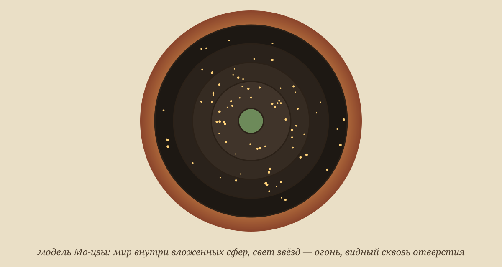

Задача трёх тел · глава 11 из 35
«Задача трёх тел»: Мо-цзы и палящее пламя

Кратко
Ван возвращается в игру. Философ Мо-цзы построил механическую модель Вселенной из вложенных сфер и по ней предсказывает четырёхлетнюю стабильную эру; император У-ди готов действовать. В телескоп Ван замечает, что у солнца плотное ядро, — эта деталь станет ключом. Но вместо стабильной эры восходит огромное солнце, и цивилизация № 141 сгорает в пламени. Тем временем в реальном мире Е Вэньцзе соглашается рассказать Ван Мяо всю историю «Красного берега».
Главные моменты
- Механистическая модель мира Мо-цзы — следующая ступень после гадания.
- Плотное ядро солнца: первый научный ключ к загадке.
- Мир сгорает — цивилизация № 141 гибнет от жара.
- Е Вэньцзе обещает рассказать о «Красном береге».
Значение
Игра показывает историю науки как череду неудачных моделей. Каждая цивилизация продвигается чуть дальше предыдущей — и всё равно погибает.